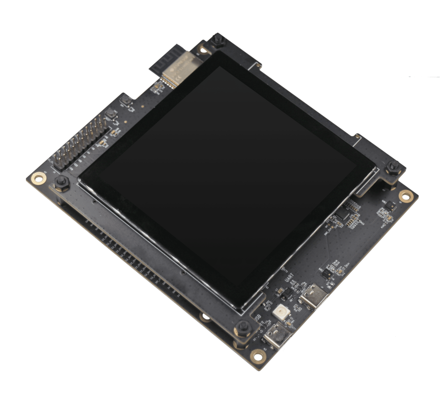
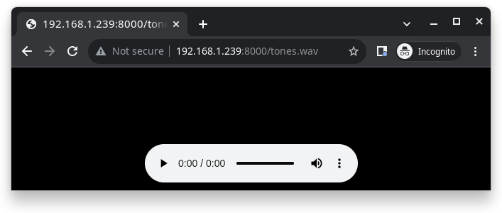

ESP32-S3-LCD-EV
The ESP32-S3-LCD-EV-Board is a small-sized AI development board from Espressif featuring the ESP32-S3 CPU with a touchscreen LCD display, dual microphone, an 16 MB Octal PSRAM and an 16 MB flash.
 |
Features
ESP32-S3 WROOM-1 Module
USB Type-C ports
Power LED
LCD Display
MEMS Microphone
16MB Octal PSRAM
16MB SPI Flash
RST and BOOT buttons (BOOT accessible to user)
Serial Console
UART0 is, by default, the serial console. It connects to the on-board CP2102 converter and is available on the USB connector USB CON8 (J1).
It will show up as /dev/ttyUSB[n] where [n] will probably be 0.
Configurations
All of the configurations presented below can be tested by running the following commands:
$ ./tools/configure.sh esp32s3-lcd-ev:<config_name>
$ make flash ESPTOOL_PORT=/dev/ttyUSB0 -j
Where <config_name> is the name of board configuration you want to use, i.e.: nsh, buttons, wifi…
Then use a serial console terminal like picocom configured to 115200 8N1.
audio
This configuration uses the I2S0 peripheral and an externally connected audio codec to play an audio file streamed over an HTTP connection while connected to a Wi-Fi network.
Audio Codec Setup
The CS4344 audio codec is connected to the following pins:
ESP32-S3 Pin |
CS4344 Pin |
Description |
|---|---|---|
5 |
MCLK |
Master Clock |
16 |
SCLK |
Serial Clock |
7 |
LRCK |
Left Right Clock (Word Select) |
6 |
SDIN |
Serial Data In on CS4344. (DOUT on ESP32-S3) |
Simple HTTP server
Prepare a PCM-encoded (.wav) audio file with 16 or 24 bits/sample (sampled at 16~48kHz). This file must be placed into a folder in a computer that could be accessed on the same Wi-Fi network the ESP32 will be connecting to.
Python provides a simple HTTP server. cd to the audio file folder on the
PC and run:
$ python3 -m http.server
Serving HTTP on 0.0.0.0 port 8000 (http://0.0.0.0:8000/)
Look for your PC IP address and test playing the prepared audio on your browser:

After successfully built and flashed, connect the board to the Wi-Fi network:
nsh> wapi psk wlan0 mypasswd 3
nsh> wapi essid wlan0 myssid 1
nsh> renew wlan0
Once connected, open NuttX’s player and play the file according to the filename and the IP address of the HTTP server:
nsh> nxplayer
nxplayer> play http://192.168.1.239:8000/tones.wav
lvgl
This is a demonstration of the LVGL graphics library running on the NuttX LCD driver. You can find LVGL here:
https://www.lvgl.io/
https://github.com/lvgl/lvgl
This configuration uses the LVGL demonstration at apps/examples/lvgldemo.
nsh
Basic NuttShell configuration (console enabled in UART0, exposed via USB connection by means of CP2102 converter, at 115200 bps).
ws2812
This configuration enables the usage of the RMT peripheral and the example
ws2812 to drive addressable RGB LEDs:
nsh> ws2812
Please note that this board contains an on-board WS2812 LED connected to GPIO38 and, by default, this config configures the RMT transmitter in the same pin.